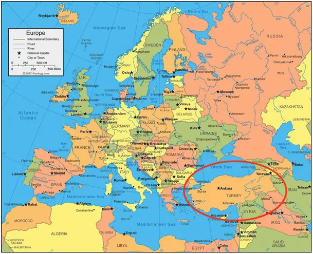
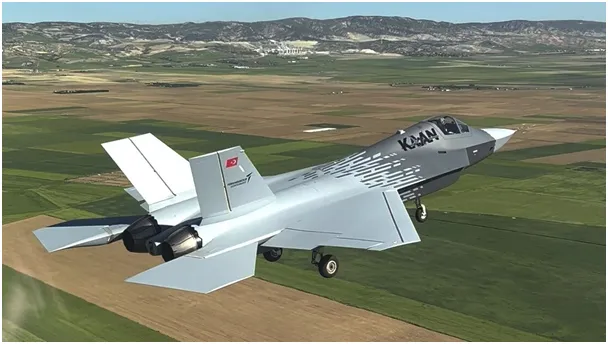
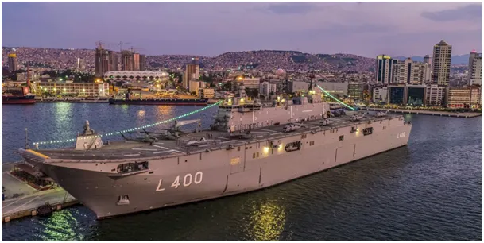
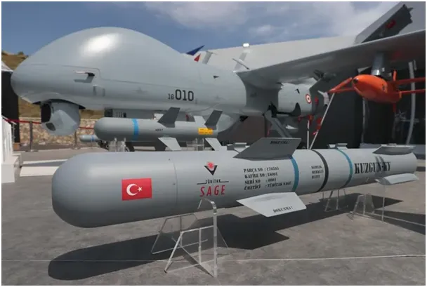
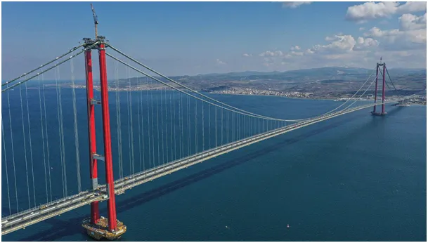

Wojsko, nasze wojsko… w czarnej dziurze.
Fizyka kwantowa jest z ludzkiego punktu widzenia nielogiczna i często niepojmowalna. Czarne dziury to takie obiekty, które z powodu skrajnie dużej koncentracji masy, a co za tym idzie, niewyobrażalnie wielkiej grawitacji wciągają wszystko, a mimo to i tak czarna dziura nie rośnie, tylko się zaciska w sobie coraz bardziej.

Wizyta naszego premiera w Turcji ma na celu rozmowy na temat udziału tego kraju w strukturach obronnych Europy. Turcja ma unikalne położenie i z tego powodu jest od wieków celem ataków wielkich mocarstw. Tylko w XX wieku odparła ataki Rosji, Wielkiej Brytanii z Nową Zelandią, Francji, Włoch, Grecji, itd. To wszystko z powodu cieśnin tureckich, czyli Bosforu i Dardaneli, łączących Morze Czarne z Morzem Śródziemnym i dalej z oceanami świata. Przez te cieśniny Anglicy wysadzili w 1854 desant na Krymie w wojnie z Rosją i to przez te cieśniny Rosjanie mają jedyne szybkie połączenie z morzami południa i np. ze swymi bazami w Syrii.

Turcja dysponuje drugą liczebnie armią w NATO z blisko pół miliona żołnierzami. Są to ludzie obyci z bronią od dziecka, bo w tradycyjnej, tureckiej rodzinie zawsze była w domu broń palna, a obecnie jest to nadal powszechne. Turcja w ostatniej dekadzie zrobiła kolosalny postęp w modernizacji armii. W oparciu o własne zasoby umieściła w Kosmosie satelity rozpoznawcze, kończy budowę drugiego lotniskowca, opracowała i produkuje drony we wszystkich możliwych rozmiarach, kończy testy myśliwca 5 generacji, produkuje najwydajniejsze silniki rakietowe, w tym do rakiet kosmicznych i buduje w Somali bazę do wysyłania dużych rakiet w Kosmos. Jednocześnie posiada bazy wojskowe w Azerbejdżanie, Katarze, Libii i Afganistanie. Kontroluje tereny północnej Syrii i zachodniego Iraku praktycznie co dzień bombardując tam z F-16 komórki leninowskiej partyzantki kurdyjskiej.
Flota turecka poza lotniskowcem desantowym to kilkanaście łodzi podwodnych, 16 fregat, 8 korwet i ok. 100 innych jednostek. Projektowanie i produkcja większości nowych technologicznie typów broni odbywa się w kraju. To tylko ogólny obraz armii tureckiej, która nie siedzi w koszarach tylko nieustannie bierze udział w walkach w Syrii i w Iraku. Na koniec trzeba dodać, że Turcy są rozlokowani w północnej części Cypru, gdzie bronią Republiki Cypru Północnego.

Po tak imponującej liście nasuwa się pytanie, ile to kosztuje! Turcja to kraj 85-milionowy z kilkoma milionami na emigracji, czyli mamy państwo blisko 3- krotnie większe od Polski z dwukrotnie większym, górzystym terytorium. Przez ostatnią dekadę wojskowy budżet Turcji wynosił trochę ponad 30 mld $ i w 2024 osiągnął 40 mld $. Czyli... było to 2-3 raz więcej niż w Polsce a obecne wydatki mamy na zbliżonym poziomie. Zatem, co się dzieje z naszym budżetem wojskowym w armii, gdzie wydaje się żołnierzom po kilka naboi rocznie, aby sobie nie zrobili krzywdy? Odpowiedź jest zapewne trudna, podobnie jak pytanie o to, co się dzieje z materią wpadającą do czarnej dziury. Obawiam się, że jak w fizyce dosypywanie do tej dziury nie zwiększy jej rozmiaru, ale będzie dla nas większym ciężarem. Dodajmy jeszcze, że nasza armia po 1945 r. odniosła dwa zwycięstwa: w 1968 r. w starciu z cywilami w czeskiej Pradze i w grudniu 1981 r. w starciu z cywilami w Polsce.

P.s. Turecka służba zdrowia działa perfekcyjnie, a infrastruktura kraju rozwija się błyskawicznie mimo trudnego terenu.
Paweł Klimczewski